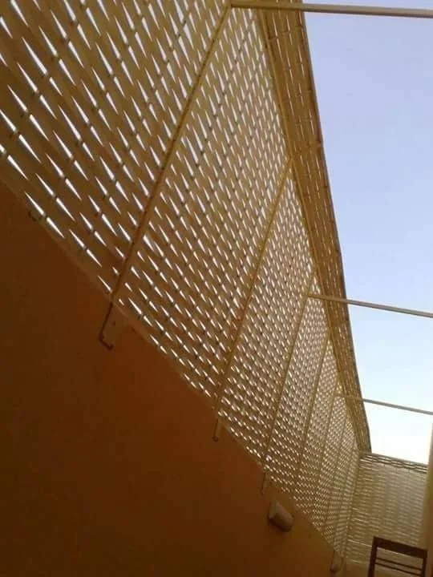
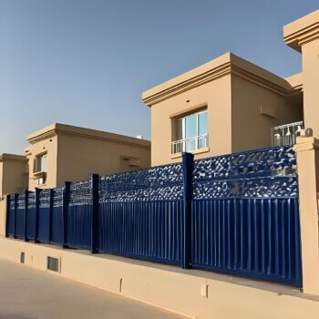
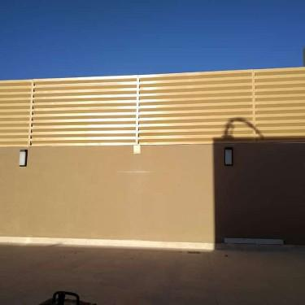
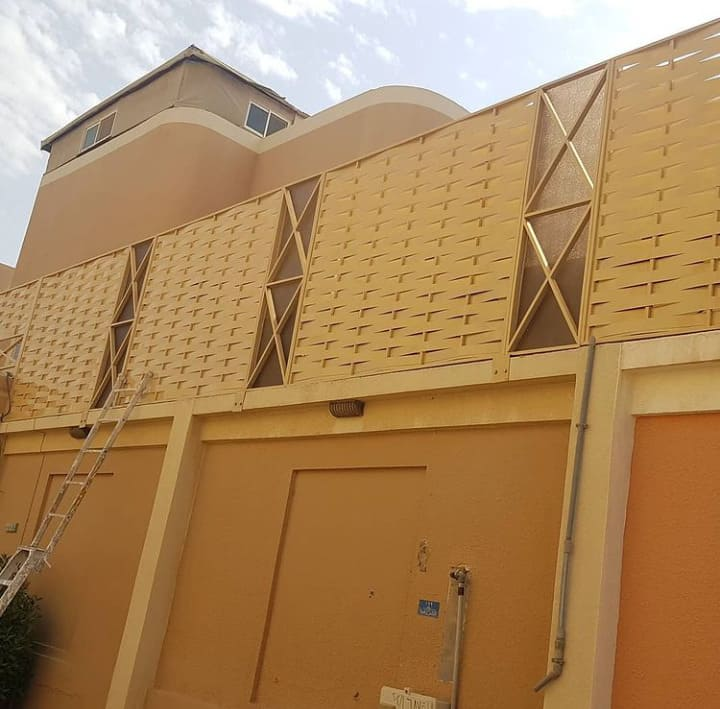

تشمل الخيارات المتاحة:
- سواتر اللكسان: شفافة وتسمح بدخول الضوء.
- سواتر الحديد: قوية ومقاومة للصدأ.
- سواتر القماش: تأتي بألوان متنوعة وتتميز بالقوة.
- سواتر شينكو: قوية ومناسبة للطبيعة الجوية القاسية.
خبرة واسعة في جميع الاعمال
2026 | سواتر احواش رائعه قوة وتصميم وسرعة تركيب
تُعتبر السواتر من العناصر الأساسية التي تسهم في تأمين المنازل والأحواش في مدينة الرياض. فهي لا توفر فقط الحماية، بل تساهم أيضًا في تعزيز الخصوصية والجمالية. في هذا المقال، سنستعرض أسعار متر السواتر وأنواعها وفوائد تركيبها.
تختلف أسعار السواتر بناءً على المواد المستخدمة. مؤسسة القاسم تقدم مجموعة متنوعة من الخيارات بأسعار تنافسية في المملكة. يتميز العرض لدينا بتوفير أنواع متعددة من السواتر التي تناسب جميع الأذواق والاحتياجات، بالإضافة إلى استخدام مواد ذات جودة عالية تتحمل أقصى درجات الحرارة وتضفي لمسة جمالية على المكان.
تشمل الخيارات المتاحة:
تتسم السواتر بالعديد من المميزات منها:
يتم تركيب السواتر بواسطة متخصصين، حيث تبدأ العملية بتحديد المنطقة المناسبة ثم تجهيز الجدار. يشمل ذلك بناء هيكل معدني لتثبيت السواتر، وضع السواتر المصممة، ثم طلاءها بالمواد العازلة المناسبة.
تتميز مؤسسة القاسم بالرياض بوجود فريق محترف من العمالة المدربة على أعلى مستوى لتركيب السواتر بشكل احترافي. يتم تثبيت السواتر بطريقة تضمن مقاومتها للرياح، حيث يتم ربط الأجزاء بعضها ببعض وتثبيت أعمدة قوية لتوفير ثبات إضافي للجدران والأحواش.
توجد عدة عوامل تؤثر على تكلفة تركيب السواتر في الرياض، منها:
تسعى مؤسسة القاسم لتقديم أفضل خيارات السواتر التي تلبي احتياجات العملاء. من أبرز المميزات:
ننصح العملاء بالتالي قبل اتخاذ قرار التركيب:
تمثل سواتر الحديد المجدول حلاً مثالياً لحماية الأحواش في الرياض، حيث توفر مستوى عالياً من الأمان مع الحفاظ على الجمالية. تصنع هذه السواتر من حديد مجلفن عالي الجودة يتحمل الظروف المناخية القاسية في المملكة.
منع التسلل والحماية من السرقة
تتحمل حرارة الرياض حتى 50°م
طلاء حراري يمنع الصدأ لسنوات
سواتر الأحواش الخشبية المعالجة من مؤسسة القاسم تمنح فناء منزلك مظهراً طبيعياً أنيقاً مع ضمان المتانة والعمر الافتراضي الطويل. نستخدم أخشاباً معالجة حرارياً ومقاومة للحشرات والعفن.
| نوع الخشب | العمر الافتراضي | مقاومة الحرارة |
|---|---|---|
| خشب الساج | 20+ سنة | ممتازة |
| خشب الصنوبر المعالج | 15 سنة | جيدة جداً |
| خشب الأرز الأحمر | 18 سنة | ممتازة |
عملية تركيب سواتر الأحواش في مؤسسة القاسم تتم وفق معايير احترافية تضمن الجودة والثبات. نبدأ بدراسة الموقع وتحديد نوع الساتر المناسب، ثم ننتقل إلى التنفيذ بفريق متخصص.
أخذ القياسات الدقيقة ودراسة التربة والظروف المناخية
حفر الأساسات وتركيب القواعد الخرسانية المسلحة
تركيب الأعمدة والهيكل الحديدي بزوايا مضبوطة
الدهانات والطلاء الحراري وفحص الجودة النهائي
في ظل الظروف المناخية في الرياض، نقدم سواتر أحواش مقاومة للصدمات والرياح بتقنيات حديثة تضمن ثباتها حتى في الرياح القوية. تستخدم مواد خاصة تزيد من مرونة ومتانة السور.
دعامات إضافية في الزوايا والمنتصف
مسامير مقاومة للاهتزاز والارتخاء
خليط من الحديد والبولي يوريثان
نقدم في مؤسسة القاسم أحدث تصميمات سواتر الأحواش لعام 2026 التي تجمع بين الأناقة والعملية. تصاميم مستوحاة من أحدث الاتجاهات العالمية مع مراعاة البيئة المحلية في الرياض.

في مدينة الرياض، أصبحت سواتر الأحواش عنصراً أساسياً في أي منزل حديث، وليس مجرد اختيار ترفيهي. مع تزايد الكثافة السكانية وتغير أنماط الحياة، أصبحت الخصوصية والأمان أولوية قصوى لأصحاب المنازل. مؤسسة القاسم، برؤيتها المتطورة، تقدم حلولاً متكاملة تجعل من سور الحوش استثماراً ذكياً يحقق عوائد متعددة.
المكونات: حديد مجلفن بسمك 2-3 مم + طلاء إيبوكسي حراري + مجلفنة بالغمر الساخن
العمر الافتراضي: 15-20 سنة مع الصيانة المناسبة
التكلفة التقريبية: 95-150 ريال/متر (حسب الارتفاع والتصميم)
المكونات: خشب ساج أو أرز أحمر معالج بالضغط + طلاء مقاوم للعوامل الجوية
العمر الافتراضي: 12-18 سنة
التكلفة التقريبية: 185-280 ريال/متر
المكونات: صفائح معدنية مجلفنة مطلية + طبقة عازلة
العمر الافتراضي: 8-12 سنة
التكلفة التقريبية: 55-85 ريال/متر
الحديد vs الخشب vs الشينكو
كل 50 سم زيادة = 15% زيادة في السعر
تصاميم خاصة وزخارف مضافة
طلاء خاص، إضاءة، أبواب إضافية
| الاحتياج | النوع الموصى به | الارتفاع المناسب | نصائح إضافية |
|---|---|---|---|
| أمان عالي (فلل في أطراف المدينة) | حديد مجدول 3 مم | 2.5 - 3 متر | إضافة أسلاك شائكة في الأعلى |
| خصوصية (أحواش أمامية) | سواتر شرائح حديد | 1.8 - 2.2 متر | استخدام ألواح معدنية كاملة |
| جمالية (فلل فاخرة) | خشب ساج معالج | 2 - 2.5 متر | دمج مع إضاءة LED زخرفية |
| ميزانية محدودة | شينكو مجلفن | 1.5 - 2 متر | طلاء إضافي كل 3 سنوات |
✅ الإجابة: نعم، تحتاج تصريح من البلدية لتركيب أي سور يزيد ارتفاعه عن 1.5 متر. مؤسسة القاسم تقدم خدمة الحصول على التصاريح نيابة عنك كجزء من الخدمة الشاملة.
✅ الإجابة: تتراوح المدة بين 3-10 أيام عمل حسب المساحة والتعقيد. متوسط المشروع (حواش 100 متر) يستغرق 5 أيام مع مؤسسة القاسم.
✅ الإجابة: نعم، نقدم ضماناً شاملاً لمدة 5 سنوات على التركيب و3 سنوات على المواد ضد عيوب الصناعة.
اتصل بنا على 0532228615
فريق فني يزور موقعك مجاناً
عرض مفصل خلال 24 ساعة
تنفيذ في الوقت المحدد